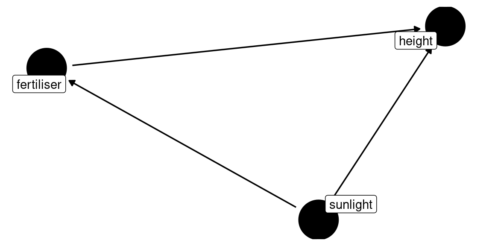
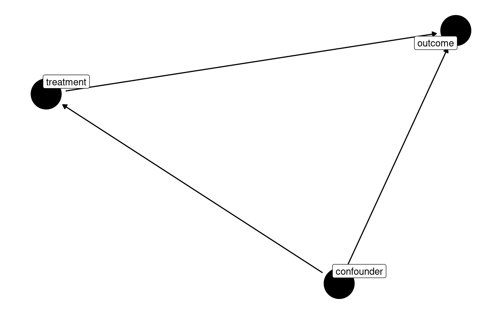
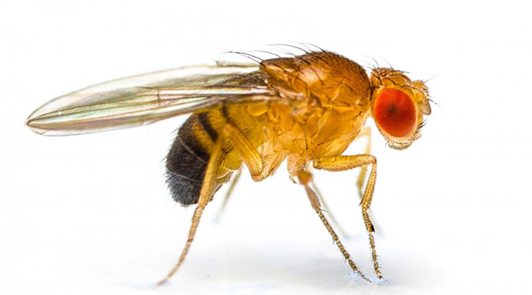
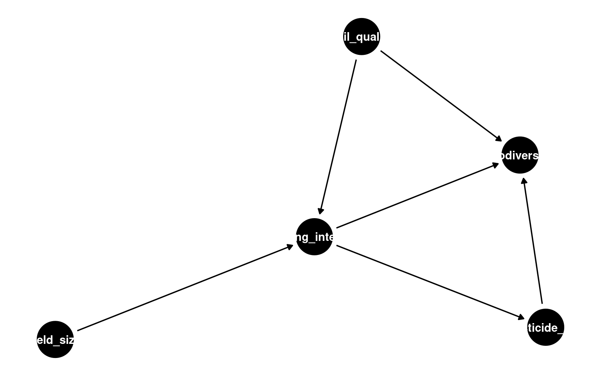
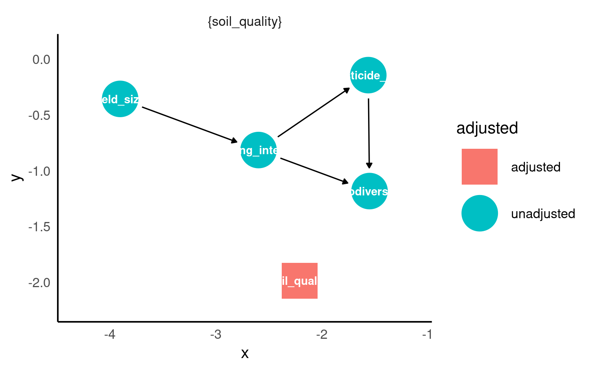

16 Causal Inference with DAGs
When we build regression models, we often want to know if our treatment or exposure causes changes in our outcome. However, simply including variables in a model doesn’t guarantee we’re estimating causal effects correctly. We need to think carefully about the causal structure of our data.
Directed Acyclic Graphs (DAGs) are visual tools that help us:
- Make our causal assumptions explicit
- Identify which variables to include in our models
- Avoid common statistical pitfalls
- Communicate our reasoning to others
In this chapter, we’ll learn to use DAGs to make better modelling decisions.
16.1 The fundamental problem
Consider this scenario: we want to know if a new fertiliser increases plant growth. We measure:
- Treatment: Fertiliser application (yes/no)
- Outcome: Plant height (cm)
- Confound: Sunlight exposure (low/high)
If plants near greenhouse windows get more sunlight AND we applied fertiliser mostly to those plants (easier to reach), we have a problem. When fertilised plants are taller, is it because of:
- The fertiliser working?
- The extra sunlight?
- Both?
Simply including both variables in a regression doesn’t tell us the answer - we need to understand the causal structure.
16.2 What is a DAG?
A Directed Acyclic Graph (DAG) is a diagram showing causal relationships between variables using:
- Nodes (rectangles or circles) representing variables
- Directed edges (arrows) showing causal direction
- No cycles (you can’t follow arrows and return to where you started)
The DAG above shows:
- Sunlight causes both fertiliser application and plant height
- Fertiliser causes plant height
- There’s a “backdoor path” from fertiliser to height through sunlight
16.3 Three key concepts
16.3.1 1. Confounders
A confounder is a variable that affects both the exposure and the outcome, creating a spurious (non-causal) association.
Structure:
Confounder
↙ ↘
Treatment → OutcomeExample: In our plant study, sunlight is a confounder because:
- It affects who gets fertiliser (plants near windows)
- It directly affects plant height
What to do: Adjust for confounders in your model to block the backdoor path.
WarningCommon mistake
Failing to adjust for confounders means your treatment effect estimate includes both:
- The true causal effect
- The spurious association through the confounder
This leads to confounding bias.
16.3.2 2. Colliders
A collider is a variable that is caused by two other variables. Arrows point into it.
Structure:
Treatment → Collider ← OutcomeExample: In a bird nesting study:
- Supplemental feeding causes predator visits (active birds attract attention)
- Large clutch size causes predator visits (bigger nests are more visible)
- Predator visits is a collider
What to do: Do NOT adjust for colliders. They naturally block paths - adjusting for them creates spurious associations.
WarningCommon mistake
Adjusting for a collider creates collider bias (also called selection bias or endogenous selection bias). This can make beneficial treatments appear harmful, or hide real effects entirely.
16.3.3 3. Mediators
A mediator sits on the causal pathway between treatment and outcome.
Structure:
Treatment → Mediator → OutcomeExample: In an exercise study:
- Exercise causes weight loss
- Weight loss reduces heart disease
- Weight loss is a mediator
What to do: It depends on your research question
- For total effect (all pathways): Don’t adjust for mediator
- For direct effect (excluding mediation): Do adjust for mediator
NoteResearch question matters
Both models above are “correct” - they just answer different questions. Always be clear about whether you want the total effect or direct effect.
16.4 Quick reference table
| Variable Type | Structure | Do we adjust? | Why? |
|---|---|---|---|
| Confounder | → Treatment, → Outcome | ✅ YES | Blocks backdoor path |
| Collider | Treatment →, Outcome → | ❌ NO | Would create spurious association |
| Mediator | Treatment → Mediator → Outcome | 🟡 DEPENDS | Blocks causal pathway (adjust only for direct effect) |
| Predictor of outcome only | → Outcome | 🟢 OPTIONAL | Improves precision, not required for identification |
16.5 Building DAGs in R
We use the ggdag package to create and analyse DAGs in R.
16.5.1 Basic DAG construction
library(ggdag)
library(dagitty)
# Create a simple DAG
my_dag <- dagify(
outcome ~ treatment + confounder, # Outcome caused by treatment and confounder
treatment ~ confounder, # Treatment caused by confounder
exposure = "treatment", # Label our exposure
outcome = "outcome" # Label our outcome
)
# Visualise it
ggdag(my_dag, text = FALSE, use_labels = "name") +
theme_dag()
16.5.2 Using ggdag tools
16.5.2.1 Check for colliders
16.5.2.2 Find adjustment sets
The most important function: What should I adjust for?
This tells you which variables to include in your model to identify the causal effect.
16.5.2.3 Examine paths
Paths can be:
- Open (biasing your estimate) - shown in one colour
- Closed (already blocked) - shown in another colour
16.5.2.4 Test specific adjustments
16.6 Worked example: Fruit fly longevity

This dataset examines how mating environment affects lifespan in fruit flies (Drosophila melanogaster).
We are introduced to the fruitfly dataset Partridge and Farquhar (1981). From our understanding of sexual selection and reproductive biology in fruit flies, we know there is a well established ‘cost’ to reproduction in terms of reduced longevity for female fruitflies. The data from this experiment is designed to test whether increased sexual activity affects the lifespan of male fruitflies.
The flies used were an outbred stock, sexual activity was manipulated by supplying males with either new virgin females each day, previously mated females (Inseminated, so remating rates are lower), or provide no females at all (Control). For virgin and inseminated treatments, males were provided either a single female, or a group of females (8). All groups were otherwise treated identically.
Research question: Does competitive mating reduce longevity compared to isolation?
16.6.1 The data
| partners | type | longevity | thorax | sleep |
|---|---|---|---|---|
| 8 | Inseminated | 35 | 0.64 | 22 |
| 8 | Inseminated | 37 | 0.68 | 9 |
| 8 | Inseminated | 49 | 0.68 | 49 |
| 8 | Inseminated | 46 | 0.72 | 1 |
| 8 | Inseminated | 63 | 0.72 | 23 |
| 8 | Inseminated | 39 | 0.76 | 83 |
The data columns are:
- type: Mating environment (Isolated vs Competitive)
- longevity: Lifespan in days
- thorax: Thorax length in mm (body size proxy)
- sleep: Average daily sleep in hours
- partners: Number of mating partners
16.6.2 Building the DAG
Let’s think about the causal relationships:
-
Does mating type affect sleep?
- Yes: Competitive mating disrupts sleep patterns
- Arrow:
type → sleep
-
Does sleep affect longevity?
- Yes: Sleep is restorative
- Arrow:
sleep → longevity
-
Does mating type directly affect longevity?
- Yes: Mating is energetically costly
- Arrow:
type → longevity
-
What about number of partners?
- More partners → less sleep (Arrow:
partners → sleep) - More mating → energetic cost (Arrow:
partners → longevity)
- More partners → less sleep (Arrow:
-
Does body size matter?
- Larger flies may be healthier (Arrow:
thorax → longevity) - But thorax doesn’t affect mating assignment (random)
- Larger flies may be healthier (Arrow:
16.6.3 Identifying key structures
16.6.3.1 Is sleep a collider?
Yes! Sleep has two arrows pointing into it:
type → sleep ← partnersWhen sleep is a collider between partners and type, it means both partners and type independently cause sleep.
If you leave sleep out of the model, there is no spurious association induced between partners and type via this path — this is what we want when our goal is to estimate the effect of mating type on longevity.
The problem arises the moment you condition on sleep by including it as a covariate in a regression. Conditioning on a collider opens the path between its parents, inducing a statistical association between partners and type that is entirely non-causal — this is called collider bias.
16.6.3.2 Is sleep also a mediator?
Yes! Sleep is on the causal pathway:
type → sleep → longevitySo sleep is both a collider AND a mediator. This is not uncommon in real data.
First, as described above, conditioning on sleep induces collider bias between type and partners. Second, conditioning on a mediator blocks the indirect pathway through which type affects longevity — meaning you would underestimate the total effect of mating type on longevity. Whether you should condition on sleep therefore depends entirely on your research question: if you want the total effect of type on longevity, sleep should be excluded; if you want only the direct effect of type on longevity not operating through sleep, conditioning on sleep is appropriate but collider bias remains a concern.
16.6.4 What should we adjust for?
The adjustment set is empty { } or contains only { thorax }.
Why no adjustment needed?
The path through sleep is blocked by the collider structure
We don’t want to block the mediator pathway (that’s part of the effect!)
Thorax is optional - it improves precision but isn’t required
16.6.5 Fitting the models
| term | estimate | std.error | statistic | p.value | conf.low | conf.high |
|---|---|---|---|---|---|---|
| (Intercept) | 63.56 | 3.157477 | 20.1299982 | 0.0000000 | 57.309460 | 69.810541 |
| typeInseminated | 0.52 | 3.867103 | 0.1344676 | 0.8932544 | -7.135317 | 8.175317 |
| typeVirgin | -15.82 | 3.867103 | -4.0909173 | 0.0000775 | -23.475317 | -8.164683 |
This estimates the total effect of mating type on longevity, including all pathways.
| term | estimate | std.error | statistic | p.value | conf.low | conf.high |
|---|---|---|---|---|---|---|
| (Intercept) | -51.8097378 | 11.0448798 | -4.690838 | 0.0000073 | -73.677831 | -29.941644 |
| typeInseminated | 7.0416611 | 3.0308934 | 2.323295 | 0.0218467 | 1.040703 | 13.042619 |
| typeVirgin | -9.7399456 | 3.0308429 | -3.213610 | 0.0016837 | -15.740804 | -3.739088 |
| thorax | 138.0020787 | 12.9489887 | 10.657364 | 0.0000000 | 112.363982 | 163.640175 |
| partners | -0.8236486 | 0.3175206 | -2.594001 | 0.0106677 | -1.452317 | -0.194980 |
Same causal effect, but potentially more precise estimates by accounting for body size variation.
| term | estimate | std.error | statistic | p.value | conf.low | conf.high |
|---|---|---|---|---|---|---|
| (Intercept) | -51.1909805 | 11.066921 | -4.6255849 | 0.0000096 | -73.1045887 | -29.2773724 |
| typeInseminated | 7.3025688 | 3.043904 | 2.3990800 | 0.0179886 | 1.2753352 | 13.3298024 |
| typeVirgin | -9.5632823 | 3.037314 | -3.1485987 | 0.0020742 | -15.5774669 | -3.5490976 |
| thorax | 138.8104021 | 12.980114 | 10.6940820 | 0.0000000 | 113.1084802 | 164.5123239 |
| partners | -0.8371348 | 0.317926 | -2.6331120 | 0.0095836 | -1.4666601 | -0.2076095 |
| sleep | -0.0600425 | 0.062364 | -0.9627741 | 0.3376132 | -0.1835295 | 0.0634445 |
This model has two problems:
-
Adjusts for collider: Opens the path
type → sleep ← partners → longevity -
Blocks mediator: Excludes the pathway
type → sleep → longevity
The effect estimate is biased.
16.6.6 Comparing models
| Total Effect | With Thorax and partners | Wrong (Collider/Mediator) | |||||||
|---|---|---|---|---|---|---|---|---|---|
| Predictors | Estimates | CI | p | Estimates | CI | p | Estimates | CI | p |
| (Intercept) | 63.56 | 57.31 – 69.81 | <0.001 | -51.81 | -73.68 – -29.94 | <0.001 | -51.19 | -73.10 – -29.28 | <0.001 |
| type [Inseminated] | 0.52 | -7.14 – 8.18 | 0.893 | 7.04 | 1.04 – 13.04 | 0.022 | 7.30 | 1.28 – 13.33 | 0.018 |
| type [Virgin] | -15.82 | -23.48 – -8.16 | <0.001 | -9.74 | -15.74 – -3.74 | 0.002 | -9.56 | -15.58 – -3.55 | 0.002 |
| thorax | 138.00 | 112.36 – 163.64 | <0.001 | 138.81 | 113.11 – 164.51 | <0.001 | |||
| partners | -0.82 | -1.45 – -0.19 | 0.011 | -0.84 | -1.47 – -0.21 | 0.010 | |||
| sleep | -0.06 | -0.18 – 0.06 | 0.338 | ||||||
| Observations | 125 | 125 | 125 | ||||||
| R2 / R2 adjusted | 0.205 / 0.192 | 0.623 / 0.611 | 0.626 / 0.611 | ||||||
Notice how the type coefficient changes in the wrong model due to collider bias.
In this example not by a lot probably because sleep doesn’t actually account for much of an effect in longevity.
16.6.7 Model diagnostics
The total effect model shows reasonable fit to assumptions.
16.7 Common pitfalls
16.7.1 1. “Control for everything” approach
Warning
Do this instead: Draw your DAG first, then use ggdag_adjustment_set() to identify what to include.
16.7.2 2. Confusing correlation with causation
Just because a variable is associated with both treatment and outcome doesn’t make it a confounder.
Example: In our fly data, sleep is associated with both type and longevity, but it’s NOT a confounder - it’s a mediator (and collider).
Check: Does the variable cause both treatment and outcome? If not, it’s not a confounder.
16.7.3 3. Ignoring temporal order
Arrows should respect time - causes come before effects.
Example: If drought severity is measured during the fire year, it cannot cause the thinning decision that happened years earlier.
16.7.4 4. Adjusting for descendants of treatment
Warning
Variables caused by treatment (mediators, colliders) should rarely be adjusted for unless you specifically want the direct effect.
16.7.5 5. Forgetting baseline variables
When you have repeated measures, baseline values are special:
These improve precision and may be confounders if they affected treatment allocation (even in randomised trials, they still improve precision).
16.8 DAG workflow summary
Follow this process when planning your analysis:
-
List your variables
- What is your exposure/treatment?
- What is your outcome?
- What other variables did you measure?
-
Draw the DAG (on paper first!)
- Use biological/domain knowledge
- Think about temporal order
- Consider unmeasured variables
-
Build in R
-
Check structures
-
Find adjustment sets
-
Fit your model
-
Sensitivity analysis
- What if a relationship goes the other way?
- What if there’s an unmeasured confounder?
- How robust are your conclusions?
16.9 Further reading
TipExcellent resources
- Book: “Causal Inference: The Mixtape” by Scott Cunningham (free online)
- Book: “The Effect” by Nick Huntington-Klein (free online)
-
Tutorial: The ggdag vignette:
vignette("intro-to-dags", package = "ggdag") - Video: “Causal Inference Bootcamp” - Brady Neal (YouTube series)
- Website: DAGitty (draw DAGs online): http://www.dagitty.net/
16.10 Exercises
Exercise 1: Identify the structure
For each scenario, identify whether the middle variable is a confounder, collider, or mediator:
a) Temperature → Plant growth rate → Final plant height
b) Soil quality → Fertiliser application → Crop yield Soil quality → Crop yield
c) Studying → Exam score Natural ability → Exam score Studying ← Natural ability
d) Exercise → Fitness level → Health outcomes
a) Mediator - growth rate is on the causal path
b) Confounder - soil quality affects both treatment and outcome
c) This is tricky! If natural ability affects who studies, it’s a confounder. But if we’re looking at who gets into university (caused by both studying and ability), then university admission would be a collider.
d) Mediator - fitness is on the causal path
Exercise 2: Build your own DAG
Consider this scenario: You want to know if intensive farming reduces biodiversity. You have data on:
- Farming intensity (low/high)
- Biodiversity score
- Pesticide use
- Field size
- Soil quality
Think about the causal relationships and build a DAG. Consider:
- Does farming intensity cause pesticide use?
- Does field size affect farming intensity decisions?
- Does soil quality affect both biodiversity and farming choices?
- Is pesticide use on the causal pathway, or does it affect other variables?
One reasonable DAG might be:


Key insights: - Pesticide use is a mediator (on the causal pathway) - Soil quality is a confounder (affects both farming choices and biodiversity) - Field size affects farming intensity but not biodiversity directly
To estimate total effect: adjust for soil quality only To estimate direct effect: adjust for soil quality and pesticide use
Exercise 3: What went wrong?
A student wants to know if a new teaching method improves exam scores. They collect data on:
- Teaching method (new/traditional)
- Exam score
- Student motivation
- Hours studied
- Prior achievement
They reason: “Motivated students score better, so I should control for motivation. Students in the new method study more, so I should control for hours studied.”
They fit this model:
Questions:
- What causal role does “hours studied” play?
- What happens when they adjust for it?
- What should they do instead?
1. Hours studied is a mediator - Teaching method → hours studied → exam score - It’s on the causal pathway (the new method might work BY getting students to study more)
2. By adjusting for hours studied, they block the mediation pathway - They’re now only estimating the direct effect - They’ve thrown away part of the effect they wanted to measure!
3. What to do instead:
For total effect (does the new method work?):
Note: Motivation might also be a mediator if the new method increases motivation. Only adjust for it if you want to exclude that pathway.
16.11 Summary
ImportantKey takeaways
DAGs help you:
- Make causal assumptions explicit
- Identify what to adjust for (and what not to!)
- Avoid common statistical traps
Three critical structures:
- Confounders: Adjust for them (block backdoor paths)
- Colliders: Don’t adjust for them (would create bias)
- Mediators: Depends on your research question
The golden rule:
Draw your DAG BEFORE fitting your model. Let the causal structure guide your statistical choices, not the other way around.